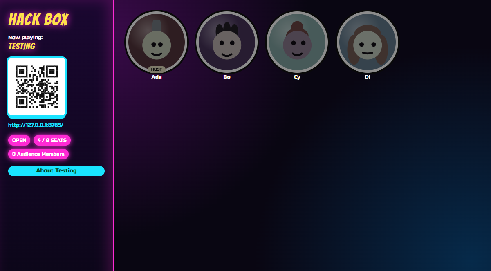
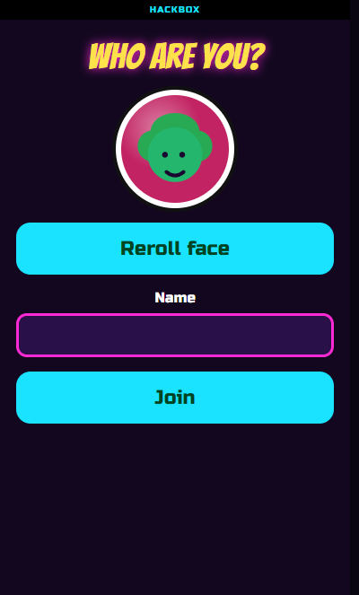

Chat plays, not just watches
Your viewers write the answers on their phones, and those answers show up big on your stream. You just get to react.
GrabBag.gg puts a party game on your stream. Viewers scan a code, pick a name, and play along on their phones. It's free. No app, no account, and nobody has to dig a controller out from behind the couch.

The best part of a party game isn't the rules. It's the answer nobody saw coming, the long pause while the judge decides, and chat typing "LMAOOO" forty times in a row. GrabBag.gg is built to put those moments on your stream.
Your viewers write the answers on their phones, and those answers show up big on your stream. You just get to react.
Not in the game this round? Vote anyway. Everyone watching can pick their favorite from their phone, so the quiet folks get a say too.
Scan the code on screen, pick a face, type a name, tap Join. Nothing to download and no account to make.
The game screen is a web page. Add it to OBS like any other browser source, or put it on a TV. It looks good on stream without any fiddling.
Pick a game, start, pause, stop. All from the phone in your hand, so you stay on camera and keep talking to chat.
You don't need a huge audience. Three regulars is a game. In Apples for Humanity, bots can fill the empty spots.
Two games so far, with more on the way. If you've played Jackbox, you'll pick these up in about one round.
One player is the judge and reads a prompt card out loud. Everyone else plays the funniest card from their hand. The judge picks a winner. Then someone else is the judge, and the grudges begin.
The real reason I was late today: ____.
A very confident goose.My grandma's group chat.I got stuck in a staring contest.
The judge sees the goose and loses it. Goose wins.
55 packs4,983 cards1 button
Want the real thing? One button pulls in every official Cards Against Humanity pack from the fan-run JSON Against Humanity collection: 971 prompt cards and 4,012 answer cards. Then switch packs on and off like any other.
Everyone gets a prompt and writes their funniest answer. Two answers go head to head on screen, and the room votes for the winner.
A terrible name for a pet goldfish.
LunchMr. Blub Blub, Esquire
Chat votes. It is not close.
The obvious worry: some stranger joins and types something unhinged. Fair. Here's what you can actually do about it, and how to make each game fit your stream.
If someone's being a problem, remove them from the game from your phone. The round keeps going without them.
Quick Quips has a banned-words list and a limit on answer length. You probably already have the list.
Turn card and prompt packs on or off before you play, including all 55 official Cards Against Humanity packs. Keep the edgy ones for late night and leave them out for the family-friendly stream.
Make timers longer so viewers on stream delay can keep up. Or turn them off and move to the next round yourself when you're done laughing.
Choose how many points audience votes are worth. Make chat the kingmaker, or just a fun little bonus.
When the game is full, extra viewers wait in line and hop in when a spot opens. Until then, they can still vote.
GrabBag.gg is still early, so some of these settings may move around between versions.
You'll need a Windows PC that stays on while you play. The first setup takes a few minutes. After that, it's quick.
Anyone on your Wi-Fi can join right away. For viewers joining from anywhere else, there's a one-time setup with a free tool. You won't need to touch your router, and the setup guide walks you through it step by step.

Put the game on your TV, and friends play from whatever phones they already have. No extra controllers, no passing the remote around. Just a room full of people yelling "WHO WROTE THAT?"
GrabBag.gg is free and open source. It lives on GitHub, and the setup guide takes you from nothing to your first game night, including how to let viewers join from anywhere. Want to build your own game? The developer docs are for you.
Heads up: GrabBag.gg is in alpha, so things will change and you might hit a bug or two. There's no way to reset your host password yet, so write it down somewhere safe.